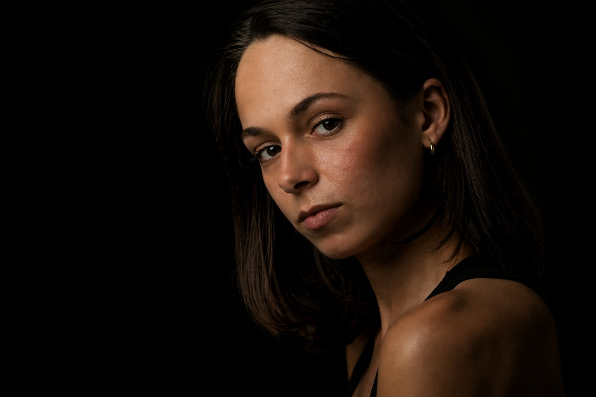
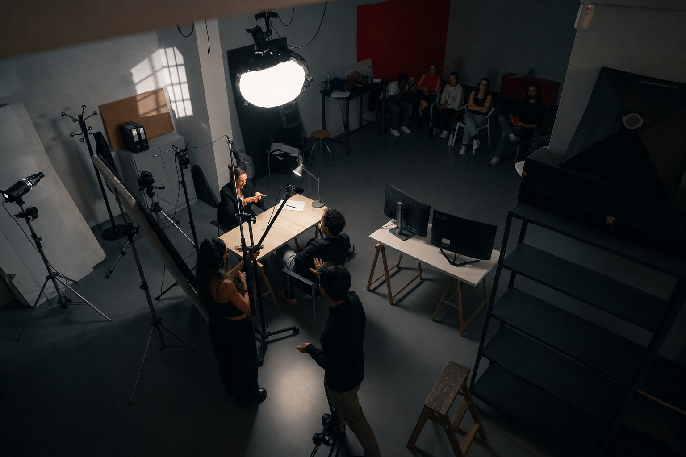
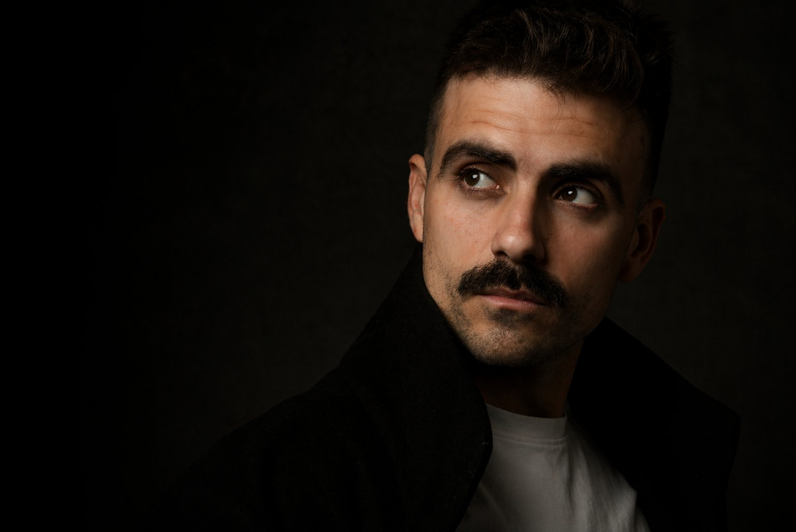
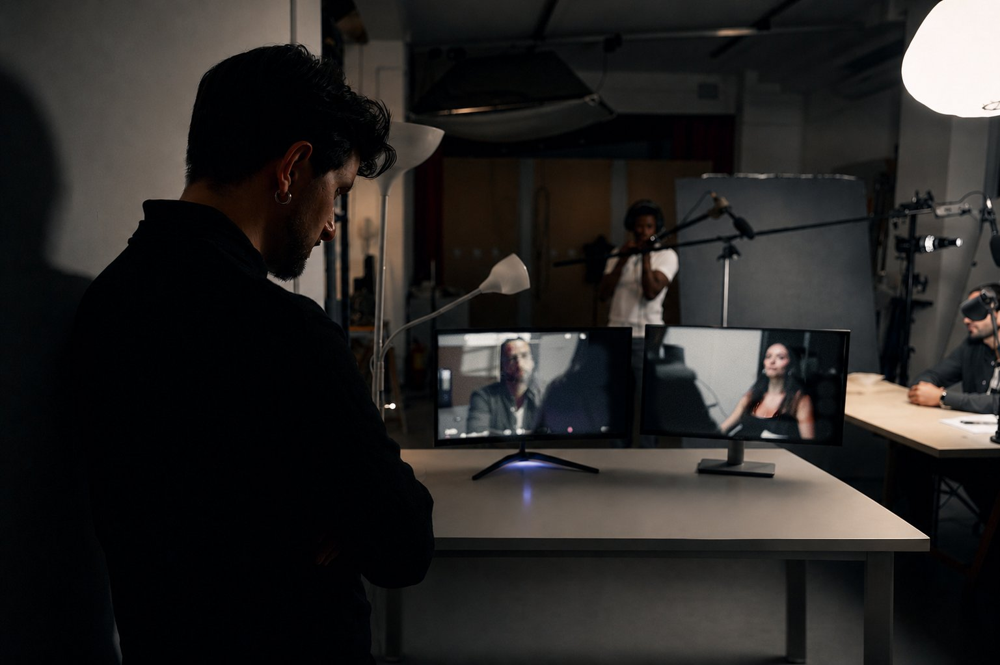
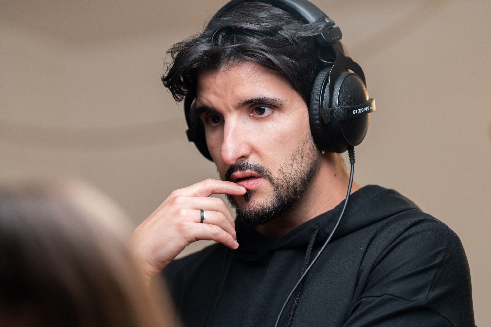

No Es Otra
Escuela
Aquí no vienes a interpretar. Vienes a entender cómo funciona la cámara, el casting y la industria.
Trabajamos interpretación delante de cámara desde un lugar honesto, técnico y profundamente humano. Aprenderás cómo funciona la escucha real, el ritmo interno, la presencia y la verdad en plano corto. Porque la cámara no premia "hacer". Premia estar.
Cada clase está enfocada en situaciones reales de industria: castings, self tapes, separatas, dirección de actores y trabajo emocional frente a cámara. Sin fórmulas vacías. Sin ejercicios que se quedan solo en el aula.
Cada actor y actriz tiene bloqueos, energía, tempos y herramientas distintas. Aquí no se trabaja en masa. Se trabaja mirando, afinando y entendiendo qué necesita cada persona para crecer de verdad delante de cámara.
Queremos que salgas de aquí entendiendo no solo cómo actuar, sino cómo sostener un plano, cómo defender un casting y cómo conectar con verdad cuando no tienes dónde esconderte. Porque al final, la cámara siempre ve más de lo que uno cree.

Qué Hacemos

Continuo
Clases mensuales de septiembre a julio. Sin parar.

¿Para
Quién Es?
Para actores y actrices que quieren trabajar de verdad. Para quienes sienten que todavía pueden afinar más su relación con la cámara y llevar su interpretación a otro nivel.
Tanto si ya tienes experiencia y necesitas seguir entrenando para mantenerse vivo y preciso delante de cámara, como si llevas poco tiempo en la industria pero quieres acelerar tu crecimiento interpretativo desde el principio.
También para quienes quieren detectar y corregir vicios, tics o mecanismos que la cámara amplifica, y aprender a generar mayor verdad, presencia e impacto en escena.
Y sí, también para quienes ya están cansados de formaciones bonitas pero vacías.
Precios
¿Cuánto Cuesta
Hacerlo en Serio?
No vendemos cursos sueltos.
Vendemos el proceso real de enfrentarte a cámara.

- Paga clase a clase
- Mayor libertad y flexibilidad
- Organiza según tu disponibilidad
- Dos clases al mes
- Entrena con constancia
- Evoluciona más rápido
- Mejor precio
- Apuesta de verdad por tu formación
- Entrena durante todo el año
- 10% de descuento sobre el precio mensual
Feedback
Algunos Alumnos

Hacía muchos años que no actuaba y para mi, fue la primera vez que lo hice delante de una cámara. Para mí es sin duda el mejor momento en mucho tiempo, un lugar donde aprendí a no autoimponerse límites y a hacer que fluya el papel de un personaje delante de una cámara. Lo mejor es que Abel Jurado es un gran comunicador y coges confianza delante de la cámara para prepararte la vida de actriz y de los castings es el mejor.

He trabajado con Abel Jurado en coaching actoral, escenas y monólogos, y la experiencia ha sido muy positiva. Es paciente y muy profesional, siempre sabe como crear un espacio cómodo para trabajar sin sentirse juzgada. Sus indicaciones me han ayudado a ganar confianza, entender mejor la escena y mejorar en cada sesión. ¡Muy recomendable!

Trabajar con Abel es un gusto por su profesionalidad, educación y amabilidad. Te explica trucos técnicos que te harán pasar al próximo nivel. Además te cuenta lo que nadie hace para que puedas posicionarte en el sector.

Para mí, Ya Te Llamaremos es un lugar donde entrenar como actor de forma libre y sin juicio. Un espacio seguro para probar cosas, equivocarme y descubrir. El acompañamiento y el feedback de Abel hacen que el trabajo sea muy personalizado y útil, ayudándome a crecer tanto en mis puntos débiles como en aquello que ya funciona. Sales con herramientas, confianza y ganas de seguir explorando.

El Coach
Abel
Jurado
Actor, filmmaker y coach actoral especializado en interpretación delante de cámara.
Durante los últimos años ha combinado el trabajo audiovisual con la dirección de actores y actrices, desarrollando una mirada muy enfocada en la verdad, la naturalidad y el lenguaje cinematográfico real.
Ha acompañado a más de 400 actores en procesos de entrenamiento, casting y trabajo frente a cámara, ayudándoles a entender cómo funciona realmente la industria audiovisual y qué exige una cámara en primer plano.
Mantiene contacto directo con representantes, agencias de actores y directores de casting, lo que le permite trabajar desde una visión actual, práctica y conectada con la realidad profesional del sector.